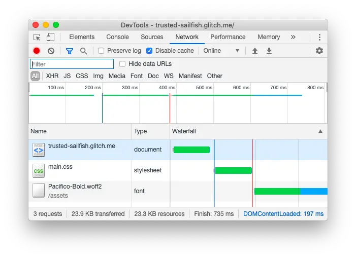

短答
预加载告诉浏览器尽早获取某个特定文件，因为首屏需要它。
网络面板用来看这个请求是否提前了。预加载是文档头部的提示，URL 必须是服务器已经知道的。它不是用来发现脚本稍后才会编出来的图片。SEO 健康检查被提示的 URL 是否真的是首屏使用的那个。
定义
对某个模板用不到的字体或主视觉做预加载，会和真正用到的文件争抢。提示不是免费的。审计寻找的是少量与模板匹配的预加载，不是从另一种布局抄来的头部。文档里的网络面板截图是工具示意。它不是本站的轨迹。
渲染对爬虫意味着什么变化
只预加载该模板在首屏使用的主视觉或字体，并确认 URL 存在于初始 HTML。
如果主视觉 URL 由客户端脚本从 API 选择，头部的预加载还无法点名它。健康修复是把 URL 打印进 HTML 再提示，而不是预加载一个占位符。改完之后，一条样例 URL 的网络列表应显示主视觉不必等迟到的发现才开始。不要把别人的瀑布图贴进报告。

要检查什么
- 预加载 URL 与首屏使用的文件一致
- 从其他模板抄来的无用预加载
- 尚未写入 HTML、因此无法被提示的主视觉 URL
- 提示列表改完后的一条样例 URL
- 没有把别人的瀑布图当作本地证据
一个结构示例
落地页模板预加载了三种活动字体和一张它从不显示的视频海报，却没有预加载真正的产品抠图。抠图是稍后插入的。记录写的是：去掉无用提示，打印抠图 URL，只提示这一个文件。活动字体可以在使用它们的页面上加载。
它不声称什么
正确的预加载不保证排名或引用。
Mika Visibility 把它归到哪里
Mika Visibility 把渲染当作 SEO 健康问题：当模板依赖 JavaScript 时，重要 HTML 能否在有脚本和无脚本两种情况下被获取并比较。这种比较不是 GEO 审计，也不是市场覆盖计划。发现要附在样例 URL 上。模板改完之后的再审计，用来确认修复。
网络面板图说明的是请求顺序。它不是某条 Mika URL 的轨迹。
常见问题
预加载是用来做什么的？
预加载告诉浏览器尽早获取某个特定文件，因为首屏需要它。
应该提示哪个文件？
只预加载该模板在首屏使用的主视觉或字体，并确认 URL 存在于初始 HTML。
正确的预加载能保证排名吗？
正确的预加载不保证排名或引用。
下一步
做一次结构化的 SEO + GEO 审计，查看健康发现、增长缺口和可以执行的蓝图。
更清晰的实体、答案、证据和上下文，会让页面更容易被理解与引用。任何回答产品中的结果都不作保证。